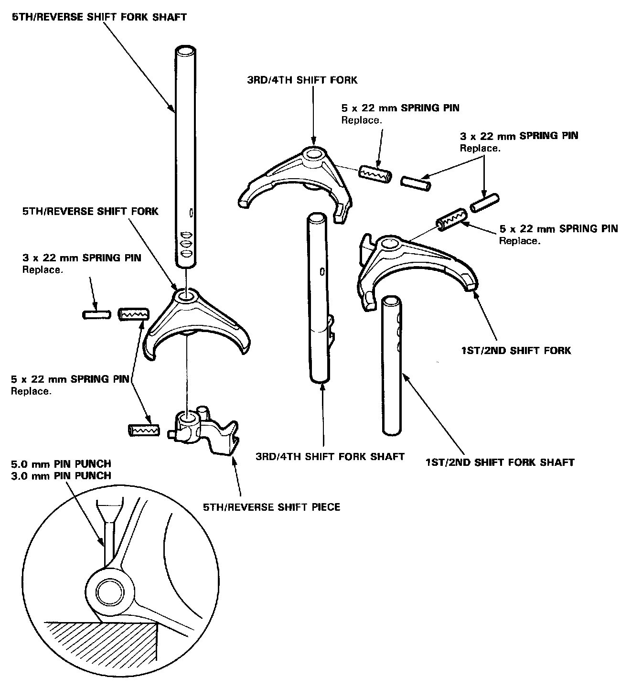

Shift Fork: Service and Repair
Disassembly/Reassembly
NOTE: Install the 3 mm spring pins, so their grooves are 180° apart from the grooves in the 5 mm spring pins. Prior to reassembling, clean all the parts in solvent, dry them and apply lubricant to any contact surfaces.

Disassembly: Remove with the 3 mm spring pin and 5 mm spring pin.
Reassembly: Install the 5 mm spring pin first, then install the 3 mm spring pin.